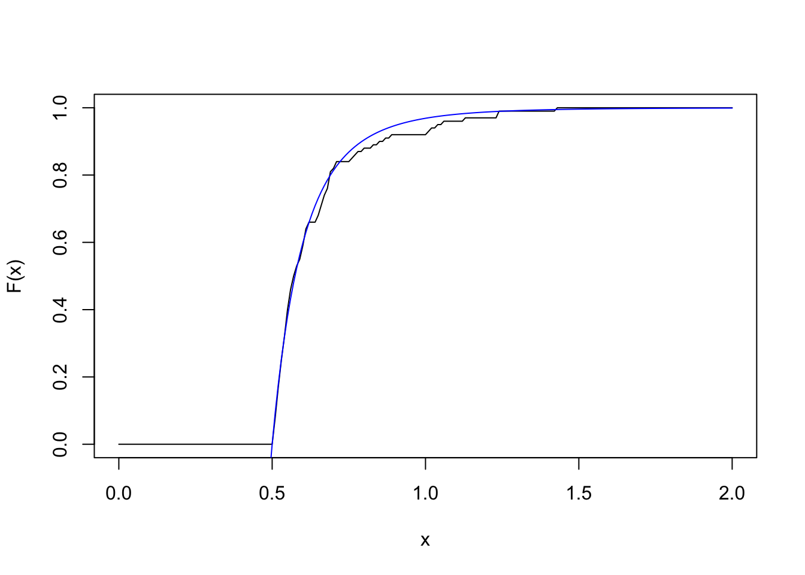
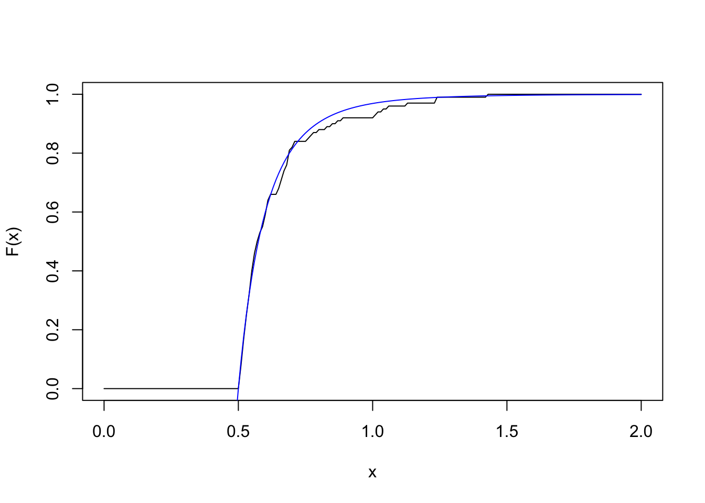

x <- my_rpareto(100, 5, 0.5)
grid_pts <- seq(0, 2, 0.01)
plot(grid_pts, ecdf(x)(grid_pts), type="l", xlab="x", ylab="F(x)")
lines(grid_pts, 1 - (0.5/grid_pts)^5, col="blue")
Definition: (inverse transform method) Let \(U \sim Uniform(0, 1)\) be a uniform random variable, and let \(F\) be the cdf of a distribution we would like to sample from (either continuous or discrete). Define \[F^{-1}(u) = \inf \{x: F(x) \geq u\}\] and let \(X = F^{-1}(U)\). Then, \(P(X \leq t) = F(t)\), i.e. \(X\) has the desired cdf and is therefore a sample from the desired distribution.
The \(Pareto(a, b)\) distribution has cdf \[F(x) = 1 - \left( \frac{b}{x} \right)^a\] where \(x \geq b\), \(a > 0\), and \(b > 0\).
Derive the inverse transform for the \(Pareto(a, b)\) distribution. That is, if \(U \sim Uniform(0, 1)\), find \(F^{-1}(U)\) as a function of \(U\).
Write an R function called my_rpareto to sample from the Pareto distribution using the inverse transform method, with the following requirements:
n: the number of samples to takea: the parameter \(a\) of the Pareto defined above; \(a > 0\)b: the parameter \(b\) of the Pareto defined above; \(b > 0\)runif function to generate your uniform sampleHere is an example of the function in action, generating 100 observations from a \(Pareto(5, 0.5)\). The empirical cdf is plotted in black, and the true Pareto cdf is overlaid in blue:
x <- my_rpareto(100, 5, 0.5)
grid_pts <- seq(0, 2, 0.01)
plot(grid_pts, ecdf(x)(grid_pts), type="l", xlab="x", ylab="F(x)")
lines(grid_pts, 1 - (0.5/grid_pts)^5, col="blue")